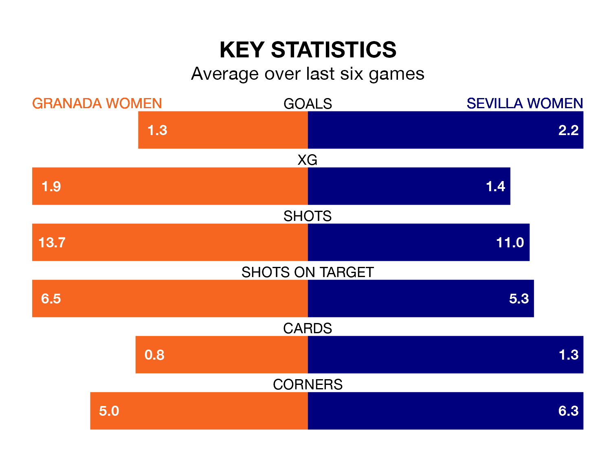

Sevilla Women are strong favourites to take all three points despite Granada Women's home advantage in Saturday lunchtime's match at Ciudad Deportiva del Granada CF.
*Betting Company* are offering odds of 1.68 on Sevilla sealing the win, with the visitors sitting sixth in Liga F table.
Granada, who are 15th in the league and 18 points behind Sevilla, are priced at 4.15 to win. A draw is set at 3.55.
With 15 goals in 17 games so far this season, Granada are scoring at below the league average rate with 0.9 goals per game. And they are conceding more than average, letting in 31 goals at a rate of 1.8 per game.
Sevilla, meanwhile, are above average scorers, with 2.1 goals per game, compared to a league average of 1.6. They have conceded 1.9 goals per game.
In Cristina Martín-Prieto Gutierrez, the away team have one of the league's most on-form strikers so far this season. She has notched 11 goals in 17 appearances, to sit third in the scoring charts.
The hosts' top scorers, with three goals each, are Edna Imade and Carlota Suárez Crespo.
Granada are in mixed form in Liga F, with two wins and two draws from their last six games.
With three wins and two draws over that period, Sevilla's form is better – they have taken 11 points from 18, compared to Granada's eight.
Granada's last match was on Sunday, a 1-1 draw against Real Sociedad Women, with Suárez Crespo getting the goal for Granada.
Sevilla lost 3-0 against Barcelona Women last time out, on Saturday.
Updated: 12:06 (UTC), 15/02/24